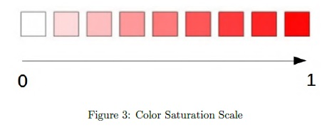
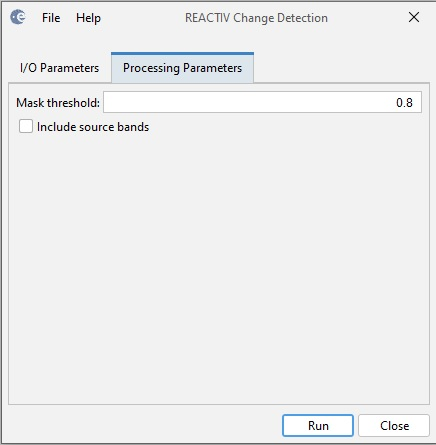

REACTIV Change Detection
This operator implements
the "Rapid and EAsy Change detection in radar TIme-series by Variation
coefficient (REACTIV)" algorithm proposed by Koeniguer et al. in [1].
The
REACTIV algorithm filters the speckle noise by exploiting the time
dimension. Therefore the algorithm can not only to improve the
signal-to-noise ratio, but also to detect all the pixels for which a
change occurred between the first and the last observation date. The
REACTIV algorithm is also a visualization tool. It highlights the
detected changes in a stack of SAR images: where are the changes, when
they happened and what their intensities. By exploiting the HSV
display, the algorithm presents all the change information of the time
series in one image. [1]
The HSV space consists of 3 components: the Hue, the Saturation and the Value (Figure 1).
The
Hue component encodes the dating information of the event. Thus, when a
change is displayed, we can approximately know when it occurs in the
observed period. In order to avoid the resemblance of color between the
extreme start of the spectrum and its extreme end, the initial [0, 1]
range is reduced to [0, 0.9] range (Figure 2). [1]
The
Saturation component, responsible for how intense the color picked by
the hue value will be, is bound to the change intensity: the bigger the
change, the more saturated the color will appear. This means that the
white spots on the map represents places with low changes over time
(Figure 3). [1]

Finally,
to keep the usual SAR Image look, the value component ranging from dark
to bright, with respect to the color picked by the hue value,
represents the maximum value of the input signal over both
polarizations (Figure 4). [1]
Input
- The input to this operator could be a coregistered stack of Sentinel-1 IW dual-pol products.
Output
- The output of the operator is a product with hue, saturation and value bands.
Parameters Used
The following parameters are used by the operator:
- Mask threshold: threshold used in creating the change mask.
Pixel with saturation value, which represents the intensity of
change, that is greater than this threshold will be masked as 1,
otherwise 0.
- Include source bands: if the checkbox is selected, all
bands of the source product will be included in the target product
together with the hue, saturation and value bands.

Figure 5. REACTIV Change Detection dialog box
Reference:
[1] Elise Colin Koeniguer, Alexandre Boulch, Pauline Trouve-Peloux
and Fabrice Janez, “Colored visualization of multitemporal data for
change detection: issues and methods”, EUSAR, 2018.